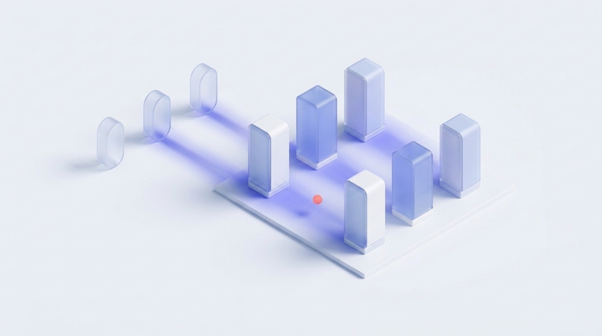
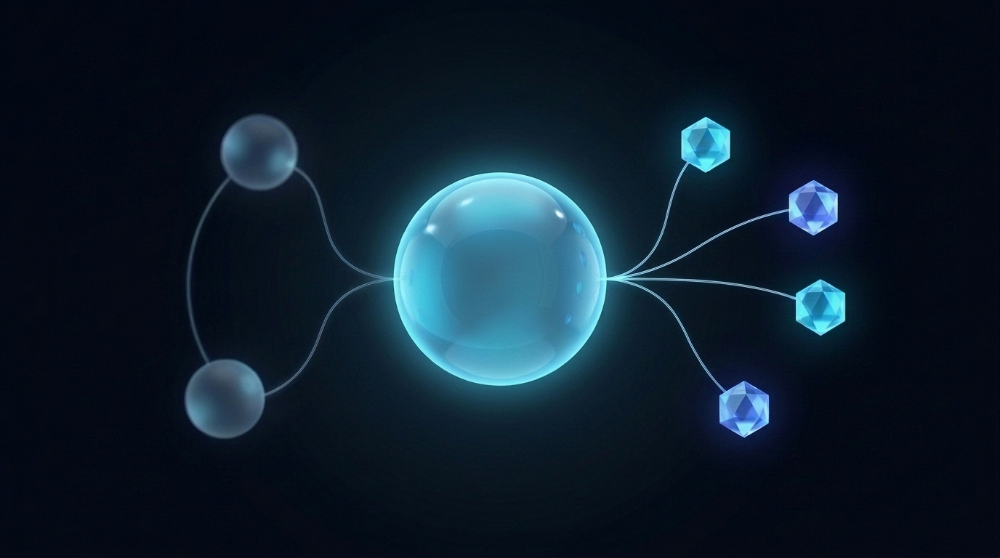

01
架构边界
Architecture
首页、副屏与目录各干各的
开发者进来通常是带着具体技术问题找的。除了新手、高校教师、备赛这三类入口链路完全不同，其余都以技术方向做主角，不做多余的职业大卡片。

概念示意 · 3 路轻分流汇聚至 6 大技术方向带着迁移仓库来的开发者，直接把项目文件丢给 AI。
首页不堆目录，让技术关联随鼠标自然展开。

概念示意 · 中心聚光与左右弧推演不把 1600px 时间轴硬塞首页，所有入口统一右侧滑出。